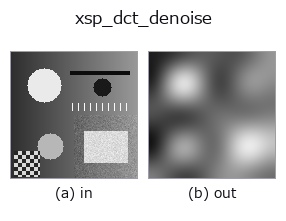

smoothing op• Datenarten: image → image
• Aufruf: fullseye.apply(img, "xsp_dct_denoise", a=0.5, b=0.5) (das 2-D-Modell ist ein Bild plus zwei skalare Regler a,b∈[0,1])

*Die Abbildung ist die tatsächliche Ausgabe auf einer synthetischen 128×128-Eingabe. Links Eingabe, rechts Ausgabe. Punktwolken als Draufsicht-Streudiagramm (Helligkeit = z), 1-D-Reihen als Linie, Volumen als Maximum-Projektion entlang z, Videos als mittleres Bild, komplexe Bilder als Betrag; Rückgabewerte, die kein Bild ergeben, werden als Werte gezeigt.*
Regler a durchfahren (0,1 / 0,5 / 0,9, der andere Regler auf Standard):
▸ xsp_dct_denoise: knob a sweep (docs site)
*Regler b ändert die Ausgabe nicht (gemessen: identisch bei 0,1 / 0,5 / 0,9).*
Auf anderen Bildern (synthetische Szene / Foto / Münzen. Obere Reihe: Eingaben, untere Reihe: deren Ausgaben. Regler auf Standard):
▸ xsp_dct_denoise: other inputs (docs site)
*Keine Farb-Eingabe (H,W,3) gezeigt: dieser Op behandelt den Farbkanal als dritte Raumachse (vermischt Kanäle). Pro Kanal aufrufen.*
Rauschunterdrückung durch harte Schwellenwertbildung der DCT-Koeffizienten (eine DCT-Version der Wavelet-Shrinkage).
> Die ausführliche Beschreibung unten ist der Originaltext — Zusammenfassung und Überschriften sind übersetzt.
しきい値は最大係数に対する相対値で決める（``thr = (0.01 + 0.2*a) *
max(|C|)`）。a が大きいほど強く間引かれ、b` は未使用。しきい値
未満の DCT 係数を 0 にしてから逆変換するので、弱いテクスチャごと消え
やすい代わりに広い平坦領域のノイズはよく落ちる。
• Leitfaden zur Familie gallery2d_smoothing_rank
• Katalog der Beispieldaten (Download-URLs / Lizenzen) — 2-D nutzt skimage.data (BSD/Public Domain) plus synthetische Bilder, 3-D nennt Download-URLs echter Datenquellen (Stanford, PDS, …).
• Herkunft und Literatur der Operatoren — die Quellen der Forschung/Verfahren, auf denen diese Operatorfamilie beruht.
• Der kanonische Algorithmus (Autor, Jahr) und seine Anwendungen stehen im Familienleitfaden oben.
Das Programm unten ist nachweislich lauffähig (gleiche Eingabe wie die Abbildung). In der Studio-Hilfe wird dieser Block zu Schaltflächen, die es sofort laden und ausführen.
xsp_dct_denoise 0.35 0.50
▸ Load this pipeline · Load & run
• gallery2d_smoothing_rank — py -3.11 examples/gallery2d_smoothing_rank.py
image als Eingabe)identity · gaussian · mean_box · bilateral · unsharp · median · min_filter · max_filter
smoothing)gaussian · mean_box · bilateral · unsharp · sk_tv · sk_wavelet · sk_rolling_ball · sk_nlm
*Provenance: ops.py — 2D Operator-Registry. Diese Notiz wird von tools/opdocs.py md erzeugt (nicht von Hand bearbeiten).*
© 2026 Kazufumi Furuse — Fullseye operator documentation. Licensed under Apache-2.0.
{kind=link}
{kind=link}